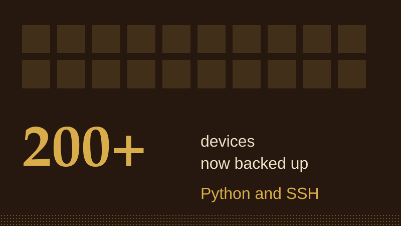

Voice network device backups
200+ live voice-network devices had no backups. I automated the fix.
- Internal tool. No public link.

The problem
Live voice-network devices, session border controllers among them, were set to keep no backups. That left disaster recovery open on a live carrier voice network: if a device failed, there was nothing recent to restore from.
I found 200+ devices in that state, and set out to close the gap.
What I built
I wrote Python automation that takes the backups over SSH and the devices’ own command line, so they run on their own.
I tested it unattended for 3+ days on 4 nodes and checked that a restore worked from the backups, end to end. While configuring the devices I found a firmware dependency, which meant the planned rollout was not supported. I stopped it before it went out.
Last, I wrote a requirements spec of 25+ items and handed the work to operations.
- 200+devices with no backups, now covered
- 3+days of unattended testing
- 4nodes in the test run
- 25+items in the requirements spec
How it works
Five steps, from a gap nobody had counted to a job operations owns.
- 200+
Find the gap
Devices that were set to keep no backups.
Automate it
Python over SSH takes the backups on its own.
- 3+ days
Validate
Ran unattended on 4 nodes. A restore was checked end to end.
Stop at the gate
A firmware dependency showed up, so I stopped an unsafe rollout.
- 25+
Hand it over
A requirements spec of 25+ items, then the work moved to operations.
The validation run
- Node 1
- Node 2
- Node 3
- Node 4
Results
- 200+devices that had no backups
- 3+days of unattended testing
- 4nodes in the test run
- 25+items in the requirements spec
- 1unsafe rollout stopped
What I owned
- Found 200+ live voice-network devices with no backups.
- Automated the backups in Python and tested them for 3+ days.
- Stopped an unsafe rollout after finding a firmware problem.
- Wrote a 25+ item requirements spec and handed the work to operations.
What I learned
- Test the restore, not just the copy. A backup you have never restored is a guess.
- A good gate saves more than it costs. Finding the firmware dependency before the rollout was cheaper than finding it after.
- Hand over with a spec. Writing down what the backups must do is what let someone else run them.